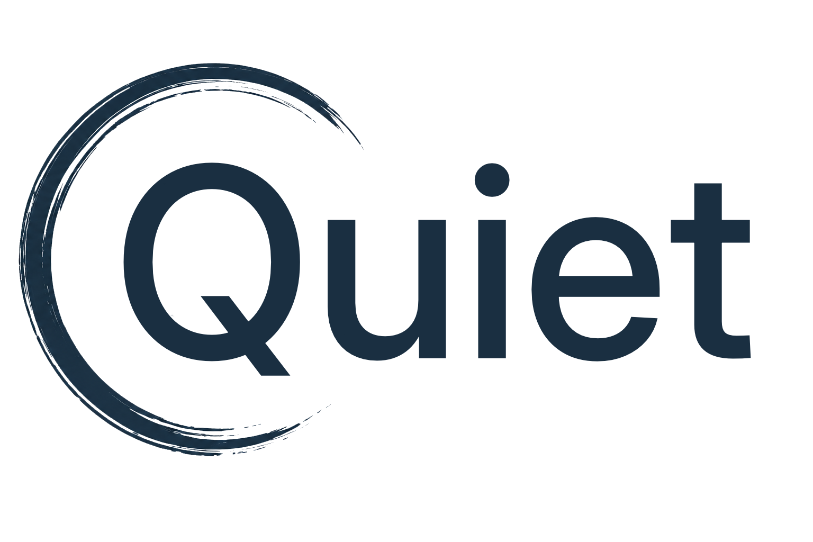

Independent by design.
No equity. No hidden agenda. No pressure to make your business fit someone else’s idea of success.

You don’t need another consultant.
Someone who can help you think clearly, challenge the right assumptions, and take real work off your plate—without trying to take over your business.
No equity. No hidden agenda. No pressure to make your business fit someone else’s idea of success.
Sometimes you need perspective. Sometimes you need research, a plan, or someone to simply own the work and get it moving.
Quiet works best with privately owned businesses where the owner still carries too much of the business in their own head.
What brought you here?
“I’m spending my whole day putting out fires.”
“We need to grow, but aren't sure where to start.”
“We can’t keep good people long term.”
“I need to hire, but I don’t know who I actually need.”
“Everything still depends on me, every day.”
“I have a big decision.
I need independent feedback.”
“Something is broken.
I'm not sure what.”
“I just need someone to
help get this organized.”
Where Quiet helps
Growth plans, new markets, pricing, expansion, major purchases, business model questions, and the decisions that are hard to make from inside the noise.
Processes, roles, systems, handoffs, vendors, capacity, recurring headaches, and the work that somehow keeps finding its way back to the owner.
Hiring needs, turnover, role clarity, team structure, management problems, and practical ways to make the business a better place to work.
Market research, competitive analysis, customer questions, opportunity sizing, and turning a good idea into a plan you can actually act on.
Sometimes the answer isn’t another recommendation. It’s simply: give it to me. Quiet can own selected operational work so you don’t have to.
Not sure which box your problem fits in?
Good.Real businesses have problems thatHow it works
Quiet is there to help you think, decide, organize, and act - without becoming another stakeholder you need to satisfy.
You don’t need a polished brief. Tell me what’s happening, what’s frustrating you, or what you can’t decide.
We separate symptoms from causes, identify the real decision, and decide what’s worth fixing now.
No 80-slide deck unless you actually need one. The goal is clarity and action, not consultant theater.
I can stay involved as a sounding board, help implement the work, or take selected operations off your plate.
Why Quiet
Quiet exists for owners who want capable support without giving up control, equity, or independence.
Think of it as the useful parts of a business partner: the perspective, the challenge, the support, the extra hands, but without the entanglements.
Call for Quiet: For the things you shouldn’t have to figure out alone.
David Hansen
Founder & Principal, Quiet LLC
Clarity. Direction. Relief.
Tell me what’s going on. You don’t need to know exactly what kind of help you need yet.